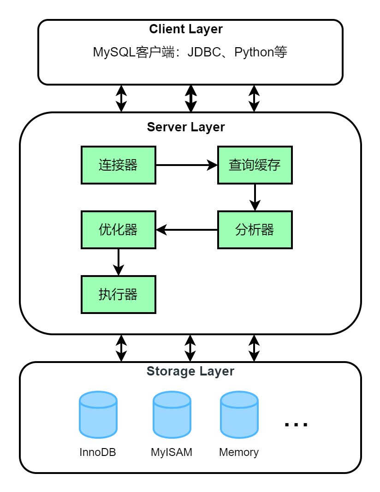

MySQL是一种关系型数据库管理系统，采用的是分层结构，本文中将简单介绍MySQL数据库的内部架构。
MySQL是一个C/S系统，MySQL服务器是服务器，连接到MySQL服务器的应用程序是客户端。MySQL体系结构主要包含三层：
- 客户端层
- 服务器层
- 存储层

客户端层
客户端层主要负责连接数据库，连接建立后，客户端可以看到一个线程。客户端层向服务端发送请求指令，并在屏幕上显示输出。
比如连接MySQL服务器：mysql -u root -p
查询端口号3306：
1 | $ netstat -ano | findstr 3306 |
可以看到启动了一个PID为148，名字为mysql.exe的进程。
另外开启一个连接会再启动一个mysql进程：
1 | $ netstat -ano | findstr 3306 |
服务器层
MySQL Server 层负责MySQL的所有逻辑功能，包括连接器、数据缓存、缓存查询、分析器、优化器、执行器等核心功能，以及所有的内置函数（如日期、时间、数学和加密函数等），所有跨存储引擎的功能都在这一层实现，比如存储过程、触发器、视图等。
连接器
客户端连接服务器时会首先经过连接器，连接器负责跟客户端建立连接、维持和管理连接、认证、权限管理等。MySQL客户端和服务器之间的通信协议是“半双工”的。
执行连接命令 mysql -u root -p，输入密码，密码认证通过，然后进行权限认证，这样用户与MySQL服务器就成功的建立了连接。
可以使用 show processlist 命令（或者SHOW FULL PROCESSLIST）中获取建立的连接：
1 | mysql> show processlist; |
Command 列表示当前的MySQL连接状态:
Sleep：线程正在等待客户端发送新的请求。Query：线程正在执行查询或者正在将结果发送给客户端。Locked：MyISAM引擎比较典型的状态，表示在MySQL服务器层，该线程正在等待表锁。Analyzing and statistics：线程正在收集存储引擎的统计信息，并生成查询的执行计划。The thread is：线程正在对结果集进行排序。Sending data：这表示多种情况：线程可能在多个状态之间传送数据，或者在生成结果集，或者在向客户端返回数据
连接建立成功后，如果不进行进一步操作，不会马上断开，此连接进入空闲状态，Sleep 表示一个空闲连接。这个空闲连接也不会一直存在，一般默认是 8 小时，可以通过设置参数 wait_timeout 来控制。
1 | mysql> show global variables like 'wait_timeout'; |
查询缓存
执行查询语句前，MySQL会先查找查询缓存，如果当前查询存在缓存（语句及结果会以 key-value 对的形式保存）中，MySQL会检查一次用户权限，如果权限没有问题，结果就会直接返回到客户端。
如果语句不在查询缓存中，就会继续后面的执行阶段。执行完成后，执行结果会被存入查询缓存中。
需要注意的是，对于频繁更新的数据表不建议开启查询缓存。只要有对一个表的更新，这个表上所有的查询缓存都会被清空，这对于并发度大的服务来说会导致额外的开销，反而降低效率 。
MySQL 8.0 版本已经将查询缓存功能删除了。
1 | mysql> show variables like '%query_cache%'; |
分析器
分析器是对 SQL 语句进行解析，首先做“词法分析”，识别出SQL 语句的字符串分别是什么，代表什么。
比如查询语句 select * from student where id=1；，识别出关键字select表示一个查询语句，名为student的表，把字符串“id”识别成表字段id。如果不存在id字段，则会在这个阶段报错。
完成词法分析后，开始进行“语法分析”，根据语法规则，判断输入的 SQL 语句是否满足 MySQL 语法。
优化器
经过分析器后，还要使用优化器进行优化，然后转化成执行计划，优化器的作用就是找到这其中最好的执行计划。包括了多种优化技术，比如确定扫描表的顺序、选择索引、确定表连接顺序等。
服务器层没有任何统计信息，存储引擎存储了数据和索引的统计信息。优化器在生成查询的执行计划时，需要向存储引擎获取相应的统计信息，优化器根据这些信息来选择一个最优的执行计划。
执行器
SQL语句经过了词法分析、语法分析和优化之后，正式进入执行器阶段，开始执行语句。
执行之前，还会进行权限验证，查询是否有相应权限。如果有权限，执行器会调用表的引擎提供的接口执行语句，执行器会将所有满足条件的行组成的记录集作为结果集返回给客户端。
存储层
存储引擎层负责数据的存储和提取。其架构模式是插件式的，支持 InnoDB、MyISAM、Memory 等多个存储引擎，不同的存储引擎共用一个 Server 层。
使用命令 show engines; 查看当前MySQL服务器支持的引擎：
1 | mysql> show engines; |
默认存储引擎为InnoDB，可以在建表的时候指定存储引擎：
1 | create table student( |
在MySQL 5.5.5 之前的版本默认使用MyISAM 存储引擎，MySQL 5.5.5 版本开始使用InnoDB作为默认存储引擎。
有人认为，公众希望环境得以保护，人类的存续得以实现，还认为那些为了这类崇高目标而奋斗的理想主义者会得到公众的爱戴，这种想法都是错的。实际上，公众所期望的只有一件事：他们自己过上安逸舒适的生活。——艾萨克·阿西莫夫《神们自己》
本文标题:MySQL基础架构：SQL查询语句执行过程
文章作者:hiyo
文章链接:https://hiyongz.github.io/posts/database-for-mysql-architecture-introduction/
许可协议:本博客文章除特别声明外，均采用CC BY-NC-ND 4.0 许可协议。转载请保留原文链接及作者。